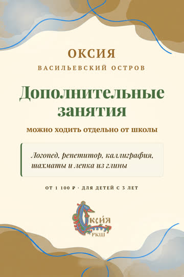

ОКСИЯ: отчёт о работе над карточкой в Яндекс Бизнесе
Школа «Оксия», Васильевский остров, 16-я линия, 7 · работа с 18.08 по 12.11.2026
10товаров и услуг с описаниями и ценами
60слайдов в 6 Историях
4публикации
115фото разобраны и размечены
80+версий и правок по замечаниям
Что сделано
| Раздел | Результат |
|---|---|
| Товары и услуги | 10 позиций: описания, цены, категории, фото, кнопка «Записаться» на карточках |
| Истории | 6 Историй, 60 слайдов, кнопка «Записаться» со ссылкой на форму заявки |
| Публикации | 4 текста |
| Фото | 115 фото разобраны по группам, размечены и загружены |
| Акции и События | Акция проверена, Событие «Открытый урок по подготовке к школе» подготовлено |
| Оформление | Фирменный вид по логотипу школы, единый стиль Историй и карточек товаров |
Хронология по шагам
18-19.08
Тексты услуг
- Собрана сводная страница проекта на GitHub Pages для просмотра по ссылке.
- Написаны короткие описания всех 10 услуг (до 250 знаков) и полные описания: что получает ребёнок, для кого, частые вопросы.
- Три прохода шлифовки русского текста.
20-21.08
Главный продукт и структура Историй
- Главным продуктом определены семейные классы (начальная школа полного дня), тексты и обложки выстроены вокруг него.
- Структура Историй собрана в 6 тем: Семейные классы, Подготовка к школе, Дополнительные занятия, Педагоги, Как проходят занятия, Как записаться.
- Подготовлены 6 обложек Историй и черновые обложки товаров с логотипом школы.
- Согласованы тексты 4 публикаций.
22-24.08
Тексты по материалам школы
- Изучена группа школы ВКонтакте (тон, философия, смысл названия «Оксия»), тексты школы и первой публикации переписаны на её основе.
- Уточнено склонение названия «ОКСИЯ».
- Сводная страница оптимизирована: картинки вынесены в отдельные файлы (26 МБ стало 53 КБ).
- Проект выделен в отдельную папку: логотип, черновые картинки, сводная страница.
01.09
Реальные фото на карточках
- Обложки 10 товаров собраны из реальных фото школы.
- Подготовлена пилотная История «Подготовка к школе» на 10 слайдов.
- Акции и События подготовлены по брифу.
05.09
Фото, прайс, публикации
- 115 фото школы просмотрены по одному и разложены по группам (таблица ниже).
- Всем фото записаны поисковые метки: название, описание, ключевые слова, автор, координаты школы.
- 28 файлов формата WebP с расширением JPG конвертированы в настоящий JPEG.
- Фото переименованы в поисковые имена вида oksiya-nachalnaya-shkola-12.jpg.
- Фото загружены в кабинет Яндекс Бизнеса пачками по 30 файлов, после каждой пачки счётчик сверен.
- Прайс из 10 позиций загружен, цена Начальной школы сверена с брифом (39 000 ₽).
- В разделе «Публикации» размещены 4 текста.
- Существующая Акция «2 бесплатные пробные недели» проверена, дубль не создавался.
- Создано Событие «Открытый урок по подготовке к школе», текст приведён к требованиям Яндекса.
05-06.09
Дизайн Историй
- Слайды Историй сверстаны вручную (HTML и CSS), размер 1280 на 1920. Шрифт заголовков Playfair Display, палитра: кремовый фон, бронза, акварельные волны.
- Согласованы обложка, затем 10 слайдов «Подготовки к школе», затем остальные 5 Историй. Итог: 6 Историй, 60 слайдов, одобрены 06.09.
- Внесены правки: телефон одной строкой, размер класса «до 12 человек». Даты из Историй убраны, их несёт Акция.
- Истории загружены в кабинет с кнопкой «Записаться» и ссылкой на форму заявки, школа стоит первой.
- Прайс пересобран с учётом порядка строк при импорте, Начальная школа стоит первой.
11-14.09
Фирменный вид по замечаниям заказчика
- Заменён логотип на чистый исходник заказчика, цвета логотипа измерены по файлу.
- Подготовлены два варианта дизайна, заказчик выбрал яркий. Внесены правки по каждой детали: цвета акцентов, размер подписи «ОКСИЯ» и логотипа, отступы от волн, выравнивание цены.
- Обложки всех 6 Историй сделаны в новом виде, у каждой свой акцент (бордо, синий, зелёный).
- Все 10 карточек товаров собраны в едином стиле.
20-24.09
Перенос нового вида на все слайды и правки
- Яркий вид перенесён на все 60 слайдов. На 10 карточек товаров добавлены кнопка «Записаться» и телефон школы.
- Прайс загружен заново, Истории пересозданы.
- Внесены правки заказчика по 8 слайдам, исправлен вывод значков на 13 слайдах.
- 4 слайда переделаны на светлый фон.
- Ещё 10 слайдов исправлены по замечаниям, проведён аудит всех слайдов на смысл, выгоду для родителя и русский язык.
12.11
Финальная вычитка и загрузка
- Все 60 слайдов и 10 описаний товаров вычитаны по правилам коммерческого русского языка: исправлено 12 слайдов и 9 описаний.
- Новый прайс загружен в кабинет и сверен с загруженным файлом: описания, цены, фото, порядок.
- Все 6 Историй пересозданы с новыми слайдами, кнопкой «Записаться» и ссылкой на форму, порядок: Семейные классы, Подготовка, Дополнительные занятия, Педагоги, Как проходят, Как записаться.
- Число отзывов на слайде (23) сверено с кабинетом.
Фото: распределение и метки
| Группа | Фото |
|---|---|
| Товары и услуги / Начальная школа | 38 |
| Товары и услуги / Подготовка к школе | 17 |
| Товары и услуги / Чистописание | 14 |
| Товары и услуги / Лепка из глины | 4 |
| Товары и услуги / Творческое чтение | 4 |
| Интерьер (жизнь школы) | 35 |
Метки, записанные внутри каждого файла (форматы EXIF, IPTC, XMP):
- название и описание кадра с привязкой к теме папки;
- ключевые слова: ОКСИЯ, частная школа, Русская классическая школа, РКШ, Васильевский остров, Санкт-Петербург и слова по теме папки;
- автор и правообладатель: ОКСИЯ;
- координаты школы (59.9341962, 30.2724968), определённые по адресу 16-я линия В.О., 7.
Загрузка в кабинет по 30 файлов, после каждой пачки счётчик сверялся: «Интерьер» 0 → 35, «Услуги» 91 → 167.
Прайс-лист
| Товар / услуга | Цена | Категория в Яндексе |
|---|---|---|
| Начальная школа (семейные классы) | 39 000 ₽ | Начальная школа Санкт-Петербург |
| Подготовка к школе для 6-7-летних детей | 8 800 ₽ | Подготовка к школе |
| Подготовка к школе для 5-летних детей | 8 800 ₽ | Подготовка к школе |
| Подготовка к школе для 4-летних детей | 6 000 ₽ | Подготовка к школе |
| Курсы по исправлению почерка и каллиграфии | 9 900 ₽ | Каллиграфия и чистописание для детей |
| Логопед | 2 000 ₽ | Занятия с логопедом |
| Помощь школьникам (репетитор) | 1 600 ₽ | Репетитор для школьника |
| Шахматы | 1 100 ₽ | Шахматы для детей |
| Лепка из полимерной глины | 1 100 ₽ | Творческие занятия для детей |
| Творческое чтение | 1 100 ₽ | Творческие занятия для детей |
В полном описании каждой позиции: чем отличается, что получает ребёнок, для кого, частые вопросы, адрес, телефон и строка с поисковыми фразами. Спрос по услугам проверен в Яндекс Вордстате (Санкт-Петербург).
Истории





Все 60 слайдов: страница со всеми слайдами.